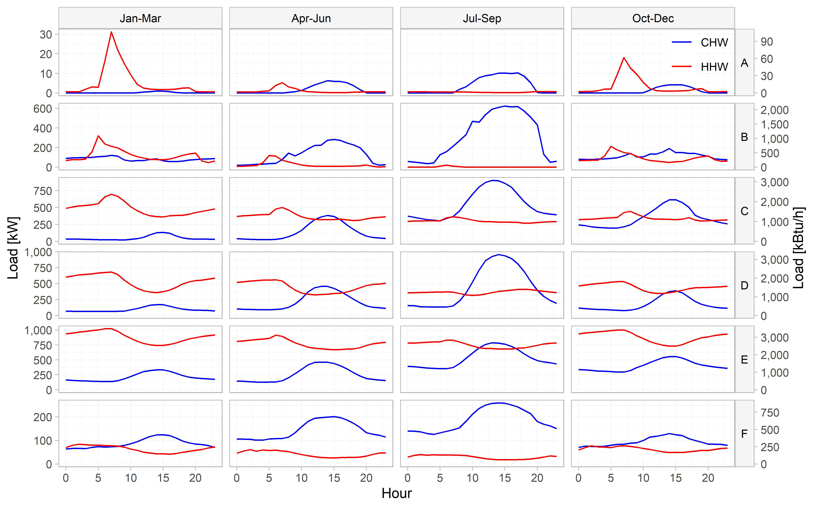
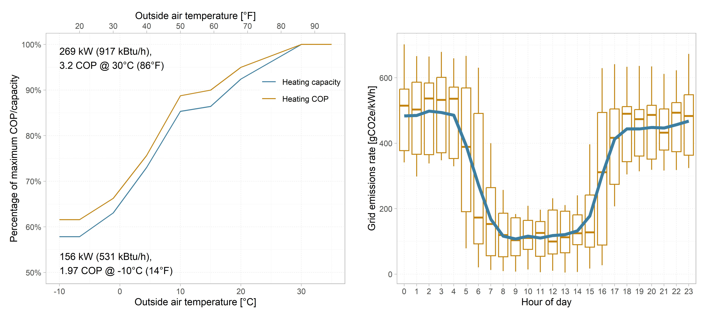
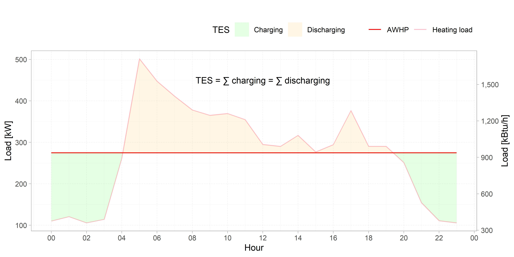
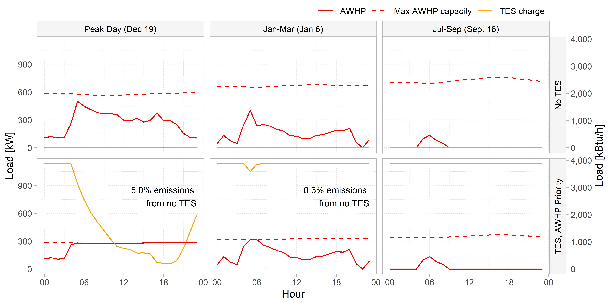
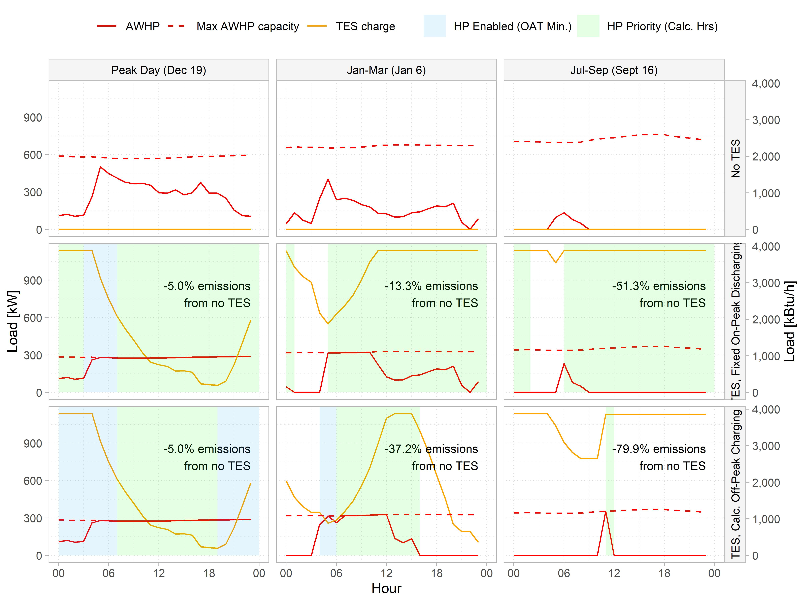
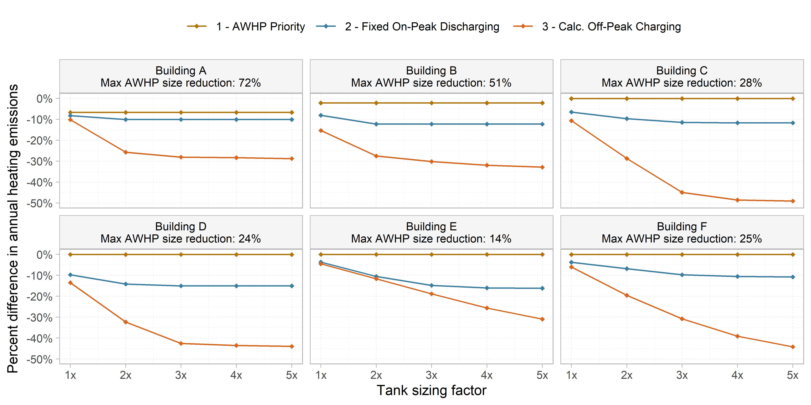

Sizing and Control Strategies for Hot Water Thermal Energy Storage in All-Electric HVAC Plants
Abstract
The addition of thermal energy storage (TES) to shift thermal loads to off-peak periods of the day effectively reduces HVAC system energy costs, emissions, and peak electric demand. While cool thermal storage systems are well documented in the existing literature, this study analyzes TES for heating hot water systems. Heating hot water TES is increasingly common as designers switch from gas boilers to heat pumps and is more economical than chilled water TES due to higher system temperature differentials. Additionally, TES systems can be configured for a range of applications, including leveling design day peak loads, minimizing utility costs, reducing short-cycling related wear and tear, capturing capacity from non-simultaneous heat recovery, and improving heat pump efficiency. Current design guidance addressing these various applications is incomplete and dispersed across sources; this paper details appropriate rule-based control strategies that can be adopted for each application. We evaluate annual energy use and emissions for the proposed configurations using marginal grid emissions rates and a plant model with air-source heat pumps for primary heating. The model is analyzed over a dataset of measured heating hot water loads from six existing commercial buildings in California, covering a range of daily and seasonal load profile characteristics. Results show that the addition of TES can simultaneously reduce required heat pump capacity and operational carbon emissions, with up to 15% annual emissions reduction using the minimum tank size for load leveling. The magnitude of these savings is closely tied to both the sizing strategy and the variation in the control signal. For certain load profiles, further emissions reductions can be achieved by increasing the tank volume; while the cost of additional storage is not offset by a reduction in installed heat pump capacity, the carbon mitigation impact is comparable to that of electrifying from gas to electric heating in the first place. By identifying the impact of various sizing and control strategies on emissions across various building load profiles, this study provides actionable findings and recommendations in designing and implementing TES systems.
1 Introduction
Thermal energy storage (TES) is an increasingly common strategy for shifting HVAC loads to favorable conditions for energy consumption or utility costs. It has historically been employed in chilled water (CHW) systems largely to reduce electricity costs and the installed size and cost of refrigeration equipment. As the industry decarbonizes heating systems by switching from gas boilers to heat pumps, there is a growing need to address these same concerns using heating hot water (HHW) TES. Prior research shows that most buildings’ hot water systems operate at low part loads the majority of the time (Raftery et al. 2024). The addition of TES for peak load leveling can thus allow substantial downsizing of air-source heat pumps, resulting in considerable cost savings due to the high first cost of heat pumps. Additionally, since HHW systems typically operate with larger ΔTs than CHW loops, hot water TES provides more storage capacity for the same volume and first cost.
There is limited literature evaluating heat pump – particularly air-to-water heat pump (AWHP) – systems with hot water TES. One study demonstrated the cost effectiveness of a TES-integrated ground-source heat pump system using measured loads from a university campus with various charging control strategies (E. Ryan et al. 2022). Another pilot study installed AWHP with HHW TES systems in California single-family homes (Weigel et al. 2025). There are additional papers demonstrating operational cost savings from chilled water TES, integrated either with heat pumps or traditional chillers, based on measured data (Woldekidan et al. 2025; Cho et al. 2021; Khun et al. 2025; Rahman et al. 2011; Qiao et al. 2026), but few use complete annual datasets. There is also a lack of research on the carbon impact of adding TES to a heat pump plant, particularly using marginal operating emissions rates which more accurately capture the variation in daily electricity generation emissions than average rates (W. Ryan 2024). Sultan et al. (2023) simulated a residential CHW TES system and calculated 12% grid emissions reduction over one week of operation.
This paper applies and expands on existing ASHRAE guidance for sizing and controlling cooling TES systems (Glazer 2019; ASHRAE 2024) to evaluate an all-electric heating plant consisting of air-to-water heat pumps and heating hot water TES. We model this using a dataset of full-year measured loads from 6 buildings to assess the contribution of load profile variation on equipment sizing. We quantify the carbon emissions impact of various sizing and control strategies and propose a framework for controlling AWHP-TES systems in order to maximize load shifting potential.
2 Methods
2.1 Inputs and Assumptions
This study uses one year of measurements of outside air temperature and conditioning loads gathered from the building automation systems of six buildings in San Francisco, California (ASHRAE Climate Zone 3C). Load data was either directly metered or calculated from flow meter and temperature sensor measurements. Figure 1 plots the average seasonal heating hot water (HHW) and chilled water (CHW) loads for each building in the dataset. Buildings A and B are academic buildings; C, D, and E are laboratory buildings; and F is a mixed-use laboratory/office building.
HVAC energy consumption is modeled with a combination of AWHPs and thermal energy storage tanks. In the scenarios with no storage, the AWHPs are sized to serve the peak hourly heating load, and an air-cooled electric chiller is included to serve any excess chilled water loads. We used the performance data obtained from two different manufacturers to generate curves for heating capacity and coefficient of performance (COP) based on outside air temperature, shown in Figure 2, for a nominal 211 kW (720 kBtu/h) modular unit at a HHW supply temperature of 54°C (130°F).
Any analysis of load shifting – to optimize for an operational parameter such as cost or emissions beyond peak load leveling – is predicated on some form of cost signal to define appropriate charging or discharging periods. This is typically utility cost rates with the goal of minimizing operational cost, but could also be equipment operating efficiency in order to minimize energy consumption. This paper uses electricity use emissions as the cost signal, modeled using long-run marginal grid emissions rates for 2025 sourced from NLR’s Cambium 2024 dataset (Gagnon et al. 2024). This data is easily accessible and clearly demonstrates the tangible environmental impact of different system configurations. All analyzed buildings fall in the CAISO grid region, and we use the MidCase grid scenario. Figure 2 shows the distribution of hourly grid emissions factors in the selected dataset, highlighting the potential to substantially reduce emissions each day by shifting electrical loads to the hours around midday in this grid region.
2.2 System Sizing
Sizing for AWHP-TES systems depends on the proportion of peak loads the tank is expected to satisfy, and there is a tradeoff between the TES capacity required to serve loads above the AWHP’s maximum capacity under peak load conditions versus the TES capacity available for load shifting. This interaction is described in detail in Casillas et al. (2023). The ASHRAE Systems Handbook describes a standard method for chilled water storage which sizes the TES to minimize the total cooling equipment size, such that the latter can meet loads on the peak day by operating at maximum capacity continuously. This is called partial storage (or load leveling) because the TES contributes only partially to the peak load and both chiller and tank must operate, in contrast to full storage where the TES would be sized to fully meet loads (with the cooling plant disabled) during a predetermined on-peak (cost) period.

The NLR Decarbonizing Building Thermal Systems guide briefly discusses heating TES systems and recommends the same sizing strategies as a starting point for designers (Houssainy et al. 2024). It is also important to note that the peak day for TES sizing refers to the day with the largest aggregated total load, which does not always coincide with the day with the largest hourly load. (This is the case for building B, which is why the AWHP does not operate up to maximum capacity in the no-TES peak day plot in Figure 4).
This paper uses the partial storage sizing strategy for heating loads. While this method results in less load shifting flexibility during high load periods, it is the lowest first-cost scenario because it minimizes heat pump size with the smallest possible tank. Increasing TES capacity beyond this point rapidly escalates first costs as it does not allow any further first cost reduction in heat pump capacity. Figure 3 represents an example peak day profile. The AWHP capacity is the sum of the peak day loads divided by 24 hours, and the TES capacity is the sum of the positive (or negative) difference between the hourly load and AWHP capacity. For simplicity, we assume constant AWHP capacity for sizing, determined at the lowest outside air temperature on the peak day (capacity varies based on hourly outside air temperature in the subsequent annual simulations). Table 1 lists the calculated equipment sizes. The tank volume is calculated using an 11°C (20°F) hot water ΔT and refers to the usable storage volume, which is dependent on the tank and diffuser geometry and stratification effectiveness and is typically less than the nominal tank volume. Common values for the figure of merit – a metric that incorporates these factors to define the usable volume – range from 80-90% of nominal volume (Glazer 2019).

Building ID | Floor area, 1,000 m² (1,000 ft²) | AWHP capacity without TES, kW (kBtu/h) | AWHP capacity with TES, kW (kBtu/h) | AWHP capacity reduction | TES capacity, kWh (kBtu) | TES volume, 1,000 l (1,000 gal) | Time to fully charge TES by AWHP at max capacity, hrs |
|---|---|---|---|---|---|---|---|
A | 1 (11) | 58 (198) | 16 (55) | 72% | 161 (549) | 13 (3) | 10.3 |
B | 5 (54) | 567 (1940) | 275 (938) | 51% | 1140 (3890) | 89 (24) | 4.2 |
C | 10 (108) | 1150 (3920) | 827 (2820) | 28% | 1490 (5080) | 116 (31) | 1.9 |
D | 7 (75) | 1080 (3680) | 826 (2820) | 24% | 2040 (6960) | 159 (42) | 2.5 |
E | 6 (65) | 1450 (4950) | 1240 (4230) | 14% | 1370 (4670) | 107 (28) | 1.2 |
F | 8 (86) | 219 (747) | 164 (560) | 25% | 194 (662) | 15 (4) | 1.2 |
2.3 Control Strategies
Control strategy 1: AWHP Priority. The first control strategy modeled is a typical “chiller-priority” load leveling strategy, where the heat pump is operated up to its maximum capacity and the tank discharges to meet any loads in excess of this capacity (ASHRAE 2024). The TES is not intentionally leveraged to reduce energy or emissions through load shifting; the plant solely uses it to meet loads with a smaller heat pump. We assume the tank is fully charged at the beginning of the year. Figure 4 illustrates this for building B, showing the operating profiles for the tank state of charge and AWHP load on the peak heating day plus one representative day from the heating and cooling seasons. The profiles for a scenario with no TES (load is served fully by AWHPs) are included for comparison, and the annotations refer to the percentage difference in electricity use emissions from heating equipment (in this case, the AWHP) from the corresponding no-TES case on that day.

This load leveling strategy results in a total of 2.2% savings in annual heating equipment electricity use emissions for this building. We can observe that the AWHP operation is largely unchanged between the two cases: the heating load exceeds the AWHP capacity, thus requiring the tank to discharge, for only 2.6% of hours. In the laboratory buildings in the dataset with “smoother” peak day profiles (i.e. there is a smaller variation between the peak day’s minimum and maximum load, so the AWHP is larger in proportion to the peak load) this percentage – and thus the emissions savings – is even lower. These findings align with our understanding of HHW load distributions being highly skewed toward low part loads.
Control strategy 2: Fixed On-Peak Discharging. In order to benefit from the load shifting potential of thermal energy storage, a “storage-priority” control strategy must be employed in which the tank is intentionally discharged in lieu of operating the heat pump, when feasible to do so while still meeting building loads. A basic implementation of this is to define a daily on-peak period (i.e., peak grid emissions rate) during which the TES takes priority over the AWHP to serve any loads. Control strategy 2 accordingly uses the previous day’s emissions rate profile to select a 4-hour on-peak period with the highest total emissions rate at the start of each day. The green and unshaded regions in Figure 5 highlight the hours in which the AWHP and TES are prioritized, respectively.
To prevent the tank from discharging prematurely before high load conditions and the AWHP subsequently having insufficient capacity to serve loads alone, we include an override to the above logic based on outside air temperature (OAT). This override resets a minimum tank charge setpoint at limits defined as the peak day OAT plus 2°C and 6°C, e.g. for building B with a peak day OAT of 3.8°C (39°F), the minimum tank charge is reset between 100% at 5.8°C (42°F) and 0% at 9.8°C (50°F). If the on-peak-hour control strategy would result in the tank charge dropping below the OAT-based minimum, the heat pump is enabled regardless of priority, shown shaded blue in Figure 5. This ensures the tank retains enough capacity required for load leveling on colder days when instantaneous heating loads exceed the AWHP capacity.
There is a clear benefit to consistently discharging the tank each day. The percentage of hours in the year in which the tank is used (i.e. discharged to meet loads) increases to 9.2%, which results in 8.1% savings in annual heating electricity use emissions. However, because this strategy is blind to the actual daily conditioning requirements, there are many instances where the tank is underutilized, such as in the September day operation in Figure 5. Some information about the upcoming load profile must be incorporated to effectively enhance the tank’s operation.

Control strategy 3: Calculated Off-Peak Charging. Instead of defining a period in which the AWHP is not preferred to operate, the final modeled strategy determines the minimum and grid optimal period to operate the heat pump that ensures sufficient storage capacity for the rest of the day. At the start of each day, we calculate the number of hours the AWHP needs to operate at maximum capacity to meet the sum of the previous day’s loads. We define an “off-peak” period of this calculated number of hours with the lowest total grid emissions rate and prioritize the AWHP during this period only unless overridden by the OAT reset. This allows the AWHP operation to be limited to the minimum period required to serve loads, during the most favourable grid conditions, and is a strong improvement over the previous control strategies with 28.4% annual tank utilization and 15.4% annual heating emissions savings.
2.4 Limitations
For the purposes of this analysis, we assume the existing measured loads are unchanged, but it is important to note that various load reduction or smoothing measures such as ramped morning warmup or supply air temperature reset can greatly reduce heating energy consumption in buildings (Cheng et al. 2024) and should be considered first, prior to sizing plant equipment. Additionally, we assumed no standby losses from the tank and did not model short-cycling effects for the heat pumps or auxiliary system components such as pumps and terminal units in the annual simulations. As a result, the reported emissions savings may be overstated, particularly for the larger tank sizes.
For control strategy 3, using the previous day’s loads to determine the AWHP operating periods is an estimation and results in some under- and over-utilization of the TES because it does not account for unoccupied days or sudden changes in weather. However, this approximation keeps the proposed controls straightforward to implement in a building automation system. While forecasting models may be more accurate, they are computationally heavy, cost-intensive to implement, and industry adoption is low (Killian and Kozek 2016; Kim et al. 2022).
3 Results and Discussion

Figure 6 shows a comparison of annual heating emissions savings for each building and control strategy across a range of TES capacities, where 1x represents the original sizing calculated in Table 1, 2x corresponds to double that capacity, and so on. While the results invariably show a reduction in operational emissions from the no-TES scenario, the magnitude of this reduction is closely tied to the equipment sizing, which varies substantially based on the building load profile. As previously discussed, buildings with a larger peak day load range have proportionally smaller AWHPs. This in turn results in proportionally larger tank sizes, indicated by the time to full charge listed in Table 1. Buildings E and F both have the smallest relative tank size (1.2 hours to full charge) and comparatively consistent daily heating loads (Figure 1). The combination of these factors means the TES regularly discharges to zero during unfavorable emissions conditions and would benefit from upsizing, as Figure 6 demonstrates. However, since the AWHPs are sized for the smallest possible capacity to meet peak day loads, increasing the TES volume does not further offset their first cost. In contrast, building A and B’s oversized tanks along with their highly seasonal heating loads signifies that while the load shifting potential is being leveraged well, there is opportunity to reduce the tank size without heavily affecting emissions savings. For all cases, we observe diminishing returns in terms of emissions savings from increased storage capacity. A sensitivity analysis in this manner can help quickly identify the threshold at which the cost of additional TES volume outweighs its emissions (or energy, or operational cost) benefits.
Defining the appropriate cost signal for any given application is essential as its characteristics have a significant impact on the load shifting operation. The grid emissions rate in California varies considerably over the course of a day, whereas outside air temperature variation is low. In other climates and grid regions, the the OAT-based equipment efficiency variation may contribute more to emissions savings than the grid emissions factors, and optimizing for energy use may be more suitable. For this analysis optimizing for emissions, the difference in annual energy use from no-TES to TES is below 2% for nearly all cases. The same cost signal will also have varying effects based on the tank configuration – for instance, in California where grid emissions are lowest in the daytime, a HHW tank allows better equipment efficiency by operating in those hours, whereas a CHW tank would mean operating the AWHP at lower efficiencies. The opposite would hold true if optimizing for cost, since utility costs generally peak in the late afternoon and early evening. A system analysis using utility costs should carefully verify the input assumptions, as cost savings are similarly contingent on utility rate structure and rate schedules can periodically change in certain regions (Weigel et al. 2025).
While the analysis presented here covers HHW tanks, these control strategies can be adopted for CHW systems without extensive adjustments. We assumed heating-driven sizing, but a CHW tank is better suited for a cooling-dominant building where AWHPs are the only equipment serving cooling loads and thus sized for cooling. Seasonal switchover to allow operation on both loops would maximize load shifting potential. For a CHW tank system served by a variable-speed chiller, it would be beneficial to vary the charging rate to allow the chiller to operate at lower part-loads and thus higher efficiency. If optimizing for utility cost instead of energy use or emissions, such a strategy would also help reduce peak demand charges. Maintaining lower part loads is less beneficial for modular heat pump equipment with limited turndown capacity.
TES systems have several additional benefits. Hot water TES in particular can be designed with independent control of supply water temperature and tank storage temperature by using a secondary mixing strategy, which allows for a dynamic upward reset of the tank storage temperature based on predicted future load. This is limited only by the capabilities of the heat pump and durability and heat loss of the tank material and effectively increases the thermal storage capacity by creating a larger ΔT. Modular heat pump plants typically include buffer tanks to meet manufacturers’ minimum system volume requirements that help reduce short-cycling (Cervera-Vázquez et al. 2016); a TES tank can serve this purpose as well. TES is also well-established as a demand response strategy (Glazer 2019) which can be incorporated into an existing control methodology. Lastly, further research is needed on the heat recovery application of TES – shifting daily load profiles to create more simultaneous load, capturing a larger fraction of potential heat recovery. This has been shown to reduce energy consumption and improve equipment efficiency (Gill 2021; Cheng et al. 2026).
4 Conclusion
This study presents a framework for evaluating AWHP systems with heating hot water thermal energy storage. We used real-world measured building load data to quantify the extent to which the addition of TES can minimize installed heat pump capacity and help avoid the substantial first costs associated with that capacity. By modeling various control strategies with relatively simple rule-based control logic to maximize on load shifting potential, we demonstrate up to 15% reduction in annual heating electricity use emissions using the minimum tank size for load leveling compared to a design without storage. A key takeaway is an understanding of how the variation in building load profile significantly impacts sizing strategy outcomes, and how the sizing outcomes affect load shifting operation. Additional emissions savings (up to 49%) are achievable by increasing the TES volume for buildings with suitable load profiles, but this intensifies first costs as it is not accompanied by further reductions in AWHP capacity. Some of these savings can be captured by implementing a tank storage temperature reset to increase ΔT when the heat pump is able to produce higher supply water temperatures. The emissions impact of increasing tank capacity should not be underestimated – in comparison, the emissions reduction achieved by electrifying the heating system from an 80% efficient gas boiler to full AWHP (without TES) ranges from 53-62% for the analyzed buildings. These findings provide valuable insights for TES-AWHP system design and operation, a system type that will only become more worthwhile as building heating systems are electrified and increase demand on the electric grid.
Acknowledgements
The California Energy Commission (grant #EPC-23-023) and the Center for the Built Environment at the University of California, Berkeley supported this research.
References
ASHRAE. 2024. ASHRAE Handbook - HVAC Systems and Equipment.
Casillas, Armando, Sang Woo Ham, Dre Helmns, and Lazlo Paul. 2023. “Considerations in Intelligently Sizing and Controlling TES-Integrated HVAC Systems.” ASHRAE Transactions (Atlanta, United States) 129: 558–65.
Cervera-Vázquez, Javier, Carla Montagud-Montalvá, and José Miguel Corberán. 2016. “Sizing of the Buffer Tank in Chilled Water Distribution Air-Conditioning Systems.” Science and Technology for the Built Environment 22 (3): 290–98. https://doi.org/10.1080/23744731.2016.1131569.
Cheng, Hwakong, Curtis Fong, Titus Ellison, et al. 2026. Electrifying Large Commercial Central Plants: Demonstration of TIER and Program Delivery Solutions. ET24SWE0028. CalNEXT.
Cheng, Hwakong, Pat Wendler, and Paul Raftery. 2024. Hot Water Heating: Design and Retrofit Guide.
Cho, Seongkwon, Han Gyeong Chu, and Cheol-Soo Park. 2021. “Optimal Control Strategies of an Ice-Based Thermal Energy Storage System in an Existing Office Building.” Building Simulation 2021, Building Simulation, vol. 17: 3610–15. https://doi.org/10.26868/25222708.2021.30665.
Gagnon, Pieter, Brady Cowiestoll, and Marty Schwarz. 2024. “Cambium 2024 Scenario Descriptions and Documentation.” Renewable Energy.
Gill, Brandon. 2021. “Solving the Large Building All-Electric Heating Problem.” ASHRAE Journal 63 (10): 12–26.
Glazer, Jason. 2019. ASHRAE Design Guide for Cool Thermal Storage. Second Edition. American Society of Heating, Refrigerating and Air-Conditioning Engineers, Inc. ASHRAE.
Houssainy, Sammy, Landan Taylor, Paul Torcellini, and Sugirdhalakshmi Ramaraj. 2024. Decarbonizing Building Thermal Systems: A How-to Guide for Heat Pump Systems and Beyond. National Renewable Energy Laboratory.
Khun, Nang San, Thoranis Deethayat, Tanongkiat Kiatsiriroat, and Attakorn Asanakham. 2025. “Strategy for Energy Savings in a Commercial Building Air-conditioning System with Chilled Water Storage: A Case Study in a Retail Mall in Thailand.” Journal of Current Science and Technology 15 (1): 89–89. https://doi.org/10.59796/jcst.V15N1.2025.89.
Killian, M., and M. Kozek. 2016. “Ten Questions Concerning Model Predictive Control for Energy Efficient Buildings.” Building and Environment 105 (August): 403–12. https://doi.org/10.1016/j.buildenv.2016.05.034.
Kim, Donghun, Zhe Wang, James Brugger, et al. 2022. “Site Demonstration and Performance Evaluation of MPC for a Large Chiller Plant with TES for Renewable Energy Integration and Grid Decarbonization.” Applied Energy 321 (September): 119343. https://doi.org/10.1016/j.apenergy.2022.119343.
Qiao, Yiyuan, Lingshi Wang, Bo Shen, et al. 2026. “Field Testing and Simulation of Load Shifting for Grid-Interactive Heat Pump Systems Integrated with Cold Thermal Energy Storage.” Energy Conversion and Management 364 (September): 121704. https://doi.org/10.1016/j.enconman.2026.121704.
Raftery, Paul, Rupam Singla, Hwakong Cheng, and Gwelen Paliaga. 2024. “Insights from Hydronic Heating Systems in 259 Commercial Buildings.” Energy and Buildings 321 (October): 114543. https://doi.org/10.1016/j.enbuild.2024.114543.
Rahman, M. M., M. G. Rasul, and M. M. K. Khan. 2011. “Feasibility of Thermal Energy Storage Systems in an Institutional Building in Subtropical Climates in Australia.” Applied Thermal Engineering 31 (14): 2943–50. https://doi.org/10.1016/j.applthermaleng.2011.05.025.
Ryan, Erich, Benjamin McDaniel, and Dragoljub Kosanovic. 2022. “Application of Thermal Energy Storage with Electrified Heating and Cooling in a Cold Climate.” Applied Energy 328 (December): 120147. https://doi.org/10.1016/j.apenergy.2022.120147.
Ryan, William. 2024. “Understanding Marginal Carbon Factors and Why They Matter.” ASHRAE Journal 66 (January): 32–39.
Sultan, Sara, Jason Hirschey, Zhenning Li, Bo Shen, Samuel Graham, and Kyle Gluesenkamp. 2023. Carbon Mitigation Potential of Heat Pump Integrated with Thermal Storage for Grid-Interactive Residential Buildings. Oak Ridge National Laboratory (ORNL), Oak Ridge, TN (United States).
Weigel, Brent, Christine White, Gabriella Broga, Emma Casavant, and John Ho. 2025. Technical Evaluation of Air-to-Water Heat Pumps with Thermal Storage. CalNEXT.
Woldekidan, Korbaga, Carlo Bianchi, Zahra Fallahi, and Tim J. LaClair. 2025. “Techno-Economic Analysis for the Addition of a Thermal Energy Storage System to a Central Plant.” ASME Journal of Engineering for Sustainable Buildings and Cities 6 (021003). https://doi.org/10.1115/1.4069026.
Footnotes
Center for the Built Environment, University of California at Berkeley, USA↩︎
Correspondence to urwa@berkeley.edu↩︎
SmithGroup↩︎
Center for the Built Environment, University of California at Berkeley, USA↩︎
Correspondence to urwa@berkeley.edu↩︎
SmithGroup↩︎
Center for the Built Environment, University of California at Berkeley, USA↩︎
Correspondence to urwa@berkeley.edu↩︎
SmithGroup↩︎